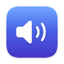

macOS が隠しているディスプレイ設定を、1 つのメニューバーパネルに
macOS が内蔵ディスプレイのためだけに残している機能を、机の上のすべてのモニタへ —— DDC による 実際の輝度調整、くっきりした HiDPI スケーリング、そしてどこでも効く輝度キー。
macOS 26 · Apple シリコン · MIT ライセンス · Pro 版なし、ライセンスキーなし
3 つのことが動かなくなる
Mac にモニタをつなぐと、輝度キーは何も変えられず、解像度リストはぼやけた選択肢をいくつか出す だけで、くっきりしたモードは隠されます。しかも全ディスプレイをまとめて動かす方法がありません。 Candela はその 3 つを取り戻します。環境設定のウインドウではなく、コントロールセンターのように ふるまうパネルとして。

バックライトまで届く輝度
- 映像ケーブル経由の DDC/CI —— モニタ本体のボタンが使うのと同じ経路
- DDC に応じないディスプレイはガンマ調光にフォールバックし、Software と表示されます
- 応答するモニタなら音量も同じパネルから

どのディスプレイでも効く輝度キー
- ポインタを追う、全ディスプレイを動かす、あるいはすべてを 1 つとして動かす
- 選んだディスプレイだけに効かせて、テレビや色にシビアなパネルは除外することも
- 必要なのは「アクセシビリティ」の許可 1 つだけ。再起動は不要

どのモニタでも、くっきり HiDPI
- サードパーティ製ディスプレイで macOS が隠している 2× レンダリングのモード
- 1440p や 4K のパネルが、読みやすさと解像感のどちらかではなく両方を得られます
- リフレッシュレートも同じページ。スケーリングのせいで気づかぬうちに 60 Hz に落ちることがありません

互いに揃うディスプレイ
- 机全体を 1 本のスライダーで
- さらにディスプレイごとに目で合わせる下限値を —— 同じパーセントでも 2 枚のパネルが同じ明るさで 光るとは限らないからです
- 隣がまだ点いているのに片方だけ真っ暗、ということが起きません

プリセット、配置、仮想ディスプレイ
- 解像度・輝度・配置を含む机の状態をまるごと保存し、ワンクリックで復元
- システム設定を開かずにディスプレイの位置をドラッグで変更
- 収録用の仮想ディスプレイを作る、あるいは Sidecar で iPad をつなぐ
無料で、上位版もありません
Pro 版もライセンスキーも 1 日あたりの回数制限もなく、出し惜しみしている機能もありません。 アプリ全体が MIT ライセンスで、ソースは GitHub にあります。役に立ったなら Ko-fi がありますが、 一度も押さなくてもアプリの動作は何ひとつ変わりません。
これが他の選択肢との一番の違いです。BetterDisplay は無料版もよくできていますが、柔軟な HiDPI スケーリング、仮想ディスプレイ、ディスプレイの切断、高度なショートカットは 21.99 ドルの Pro 向けに 残しています。Lunar はオープンソースで買い切り 23 ドル、無料版は輝度調整が 1 日 100 回までです。 どちらも良いソフトウェアです。「どの機能が使えるのか」という問いに対する Candela の答えは、 単に「全部」です。
詳しい比較を読む →（英語）
まずはここから
以下のガイドは現在、英語と簡体字中国語で提供しています:
- 外部モニタのにじみを直す —— 1440p や 4K でテキストが甘く見える理由と、実際に効く対処
- Mac で HiDPI を有効にする —— HiDPI とは何か、macOS が提示してくれないディスプレイでどう有効化するか
- 外部モニタで輝度キーを効かせる —— どのディスプレイでも F1・F2 を使うために必要な許可
- 複数モニタの輝度を同期する —— 机全体を 1 本のスライダーで、そして本当に揃える方法
2 つの方法
DMG をダウンロードして Candela を「アプリケーション」にドラッグするか、Homebrew を使います:
brew install --cask iamzifei/tap/candela
Candela は Developer ID で署名され Apple の公証を受けているので、右クリックでの回避操作なしに開きます。
必要なもの
- macOS 26 以降
- Apple シリコン
- 輝度キーには「アクセシビリティ」の許可が 1 つ必要です。機能を初めて有効にするときに macOS が尋ねます
- 外部ディスプレイのハードウェア輝度には、モニタ側の OSD メニューで DDC/CI が有効になっている 必要があります。多くのモニタは初期状態で有効ですが、一部の機種や USB-C ドックは通しません
同じメニューバーのもう 1 つ

AudioSwitch すべてのオーディオ入力と出力を 1 つのパネルに —— デバイスの切り替え、音量、ミュート、リアルタイムのマイクレベルメーター、マイクの完全オフスイッチ。無料、MIT、Apple シリコンネイティブ。